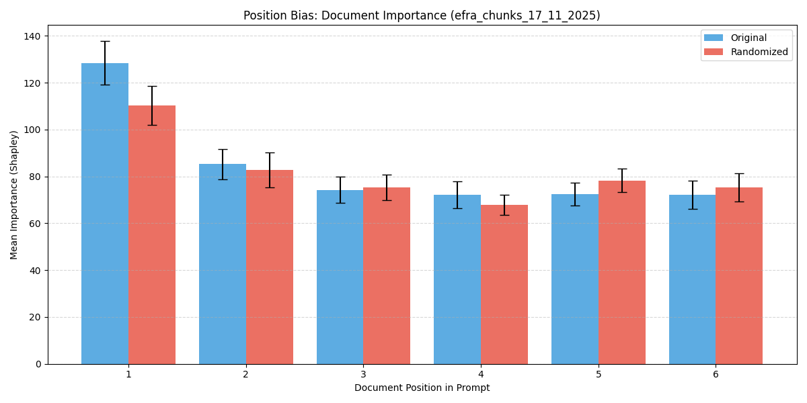
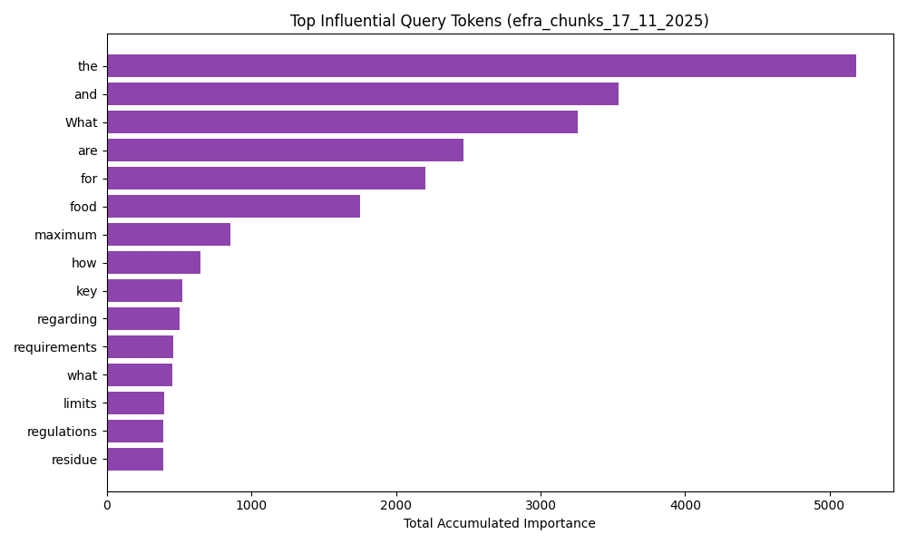
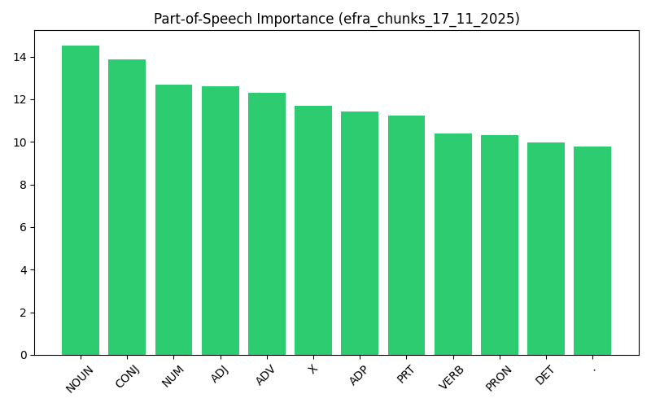

RAG Pipeline Comparative Analysis
Generated on 2025-11-26 13:26
Global Syntax & Logic Analysis
Top POS Bigrams (Weighted)
| Type | Pattern | Mean Norm. Weight | Count |
|---|---|---|---|
| retrieval | NOUN + OTHER | 3.6375 | 3 |
| generation | OTHER + VERB | 3.2155 | 4 |
| retrieval | OTHER + ADJ | 3.1906 | 3 |
| generation | OTHER + NOUN | 2.4846 | 4 |
| generation | VERB + ADJ | 2.3841 | 3 |
| generation | ADJ + NOUN | 2.3216 | 8 |
| generation | NOUN + NOUN | 2.3162 | 9 |
| generation | NOUN + ADP | 2.0966 | 4 |
| generation | ADP + NOUN | 1.8592 | 5 |
| generation | ADP + DET | 1.7845 | 6 |
Pattern Weight Summary
| Type | Pattern | Mean Norm. Weight | Count |
|---|---|---|---|
| generation | ADJ+NOUN | 1.6230 | 558 |
| generation | ADP+NOUN | 1.4686 | 434 |
| generation | DET+NOUN | 1.3732 | 458 |
| generation | VERB+NOUN | 1.4836 | 188 |
| retrieval | ADJ+NOUN | 0.6700 | 75 |
Experiment: efra_06_11
Detailed Logs (efra_06_11)
| Condition | File | Query Text | Type | Links |
|---|---|---|---|---|
| retrieval | query_0 | retrieval | Detailed View | Folder | |
| retrieval | query_1 | retrieval | Detailed View | Folder | |
| retrieval | query_10 | retrieval | Detailed View | Folder | |
| retrieval | query_100 | retrieval | Detailed View | Folder | |
| retrieval | query_101 | retrieval | Detailed View | Folder | |
| retrieval | query_102 | retrieval | Detailed View | Folder | |
| retrieval | query_103 | retrieval | Detailed View | Folder | |
| retrieval | query_104 | retrieval | Detailed View | Folder | |
| retrieval | query_105 | retrieval | Detailed View | Folder | |
| retrieval | query_106 | retrieval | Detailed View | Folder | |
| retrieval | query_107 | retrieval | Detailed View | Folder | |
| retrieval | query_108 | retrieval | Detailed View | Folder | |
| retrieval | query_109 | retrieval | Detailed View | Folder | |
| retrieval | query_11 | retrieval | Detailed View | Folder | |
| retrieval | query_110 | retrieval | Detailed View | Folder | |
| retrieval | query_111 | retrieval | Detailed View | Folder | |
| retrieval | query_112 | retrieval | Detailed View | Folder | |
| retrieval | query_113 | retrieval | Detailed View | Folder | |
| retrieval | query_114 | retrieval | Detailed View | Folder | |
| retrieval | query_115 | retrieval | Detailed View | Folder | |
| retrieval | query_116 | retrieval | Detailed View | Folder | |
| retrieval | query_117 | retrieval | Detailed View | Folder | |
| retrieval | query_118 | retrieval | Detailed View | Folder | |
| retrieval | query_119 | retrieval | Detailed View | Folder | |
| retrieval | query_12 | retrieval | Detailed View | Folder | |
| retrieval | query_120 | retrieval | Detailed View | Folder | |
| retrieval | query_121 | retrieval | Detailed View | Folder | |
| retrieval | query_122 | retrieval | Detailed View | Folder | |
| retrieval | query_123 | retrieval | Detailed View | Folder | |
| retrieval | query_124 | retrieval | Detailed View | Folder | |
| retrieval | query_125 | retrieval | Detailed View | Folder | |
| retrieval | query_126 | retrieval | Detailed View | Folder | |
| retrieval | query_127 | retrieval | Detailed View | Folder | |
| retrieval | query_128 | retrieval | Detailed View | Folder | |
| retrieval | query_129 | retrieval | Detailed View | Folder | |
| retrieval | query_13 | retrieval | Detailed View | Folder | |
| retrieval | query_130 | retrieval | Detailed View | Folder | |
| retrieval | query_131 | retrieval | Detailed View | Folder | |
| retrieval | query_132 | retrieval | Detailed View | Folder | |
| retrieval | query_14 | retrieval | Detailed View | Folder | |
| retrieval | query_15 | retrieval | Detailed View | Folder | |
| retrieval | query_16 | retrieval | Detailed View | Folder | |
| retrieval | query_17 | retrieval | Detailed View | Folder | |
| retrieval | query_18 | retrieval | Detailed View | Folder | |
| retrieval | query_19 | retrieval | Detailed View | Folder | |
| retrieval | query_2 | retrieval | Detailed View | Folder | |
| retrieval | query_20 | retrieval | Detailed View | Folder | |
| retrieval | query_21 | retrieval | Detailed View | Folder | |
| retrieval | query_22 | retrieval | Detailed View | Folder | |
| retrieval | query_23 | retrieval | Detailed View | Folder | |
| retrieval | query_24 | retrieval | Detailed View | Folder | |
| retrieval | query_25 | retrieval | Detailed View | Folder | |
| retrieval | query_26 | retrieval | Detailed View | Folder | |
| retrieval | query_27 | retrieval | Detailed View | Folder | |
| retrieval | query_28 | retrieval | Detailed View | Folder | |
| retrieval | query_29 | retrieval | Detailed View | Folder | |
| retrieval | query_3 | retrieval | Detailed View | Folder | |
| retrieval | query_30 | retrieval | Detailed View | Folder | |
| retrieval | query_31 | retrieval | Detailed View | Folder | |
| retrieval | query_32 | retrieval | Detailed View | Folder | |
| retrieval | query_33 | retrieval | Detailed View | Folder | |
| retrieval | query_34 | retrieval | Detailed View | Folder | |
| retrieval | query_35 | retrieval | Detailed View | Folder | |
| retrieval | query_36 | retrieval | Detailed View | Folder | |
| retrieval | query_37 | retrieval | Detailed View | Folder | |
| retrieval | query_38 | retrieval | Detailed View | Folder | |
| retrieval | query_39 | retrieval | Detailed View | Folder | |
| retrieval | query_4 | retrieval | Detailed View | Folder | |
| retrieval | query_40 | retrieval | Detailed View | Folder | |
| retrieval | query_41 | retrieval | Detailed View | Folder | |
| retrieval | query_42 | retrieval | Detailed View | Folder | |
| retrieval | query_43 | retrieval | Detailed View | Folder | |
| retrieval | query_44 | retrieval | Detailed View | Folder | |
| retrieval | query_45 | retrieval | Detailed View | Folder | |
| retrieval | query_46 | retrieval | Detailed View | Folder | |
| retrieval | query_47 | retrieval | Detailed View | Folder | |
| retrieval | query_48 | retrieval | Detailed View | Folder | |
| retrieval | query_49 | retrieval | Detailed View | Folder | |
| retrieval | query_5 | retrieval | Detailed View | Folder | |
| retrieval | query_50 | retrieval | Detailed View | Folder | |
| retrieval | query_51 | retrieval | Detailed View | Folder | |
| retrieval | query_52 | retrieval | Detailed View | Folder | |
| retrieval | query_53 | retrieval | Detailed View | Folder | |
| retrieval | query_54 | retrieval | Detailed View | Folder | |
| retrieval | query_55 | retrieval | Detailed View | Folder | |
| retrieval | query_56 | retrieval | Detailed View | Folder | |
| retrieval | query_57 | retrieval | Detailed View | Folder | |
| retrieval | query_58 | retrieval | Detailed View | Folder | |
| retrieval | query_59 | retrieval | Detailed View | Folder | |
| retrieval | query_6 | retrieval | Detailed View | Folder | |
| retrieval | query_60 | retrieval | Detailed View | Folder | |
| retrieval | query_61 | retrieval | Detailed View | Folder | |
| retrieval | query_62 | retrieval | Detailed View | Folder | |
| retrieval | query_63 | retrieval | Detailed View | Folder | |
| retrieval | query_64 | retrieval | Detailed View | Folder | |
| retrieval | query_65 | retrieval | Detailed View | Folder | |
| retrieval | query_66 | retrieval | Detailed View | Folder | |
| retrieval | query_67 | retrieval | Detailed View | Folder | |
| retrieval | query_68 | retrieval | Detailed View | Folder | |
| retrieval | query_69 | retrieval | Detailed View | Folder | |
| retrieval | query_7 | retrieval | Detailed View | Folder | |
| retrieval | query_70 | retrieval | Detailed View | Folder | |
| retrieval | query_71 | retrieval | Detailed View | Folder | |
| retrieval | query_72 | retrieval | Detailed View | Folder | |
| retrieval | query_73 | retrieval | Detailed View | Folder | |
| retrieval | query_74 | retrieval | Detailed View | Folder | |
| retrieval | query_75 | retrieval | Detailed View | Folder | |
| retrieval | query_76 | retrieval | Detailed View | Folder | |
| retrieval | query_77 | retrieval | Detailed View | Folder | |
| retrieval | query_78 | retrieval | Detailed View | Folder | |
| retrieval | query_79 | retrieval | Detailed View | Folder | |
| retrieval | query_8 | retrieval | Detailed View | Folder | |
| retrieval | query_80 | retrieval | Detailed View | Folder | |
| retrieval | query_81 | retrieval | Detailed View | Folder | |
| retrieval | query_82 | retrieval | Detailed View | Folder | |
| retrieval | query_83 | retrieval | Detailed View | Folder | |
| retrieval | query_84 | retrieval | Detailed View | Folder | |
| retrieval | query_85 | retrieval | Detailed View | Folder | |
| retrieval | query_86 | retrieval | Detailed View | Folder | |
| retrieval | query_87 | retrieval | Detailed View | Folder | |
| retrieval | query_88 | retrieval | Detailed View | Folder | |
| retrieval | query_89 | retrieval | Detailed View | Folder | |
| retrieval | query_9 | retrieval | Detailed View | Folder | |
| retrieval | query_90 | retrieval | Detailed View | Folder | |
| retrieval | query_91 | retrieval | Detailed View | Folder | |
| retrieval | query_92 | retrieval | Detailed View | Folder | |
| retrieval | query_93 | retrieval | Detailed View | Folder | |
| retrieval | query_94 | retrieval | Detailed View | Folder | |
| retrieval | query_95 | retrieval | Detailed View | Folder | |
| retrieval | query_96 | retrieval | Detailed View | Folder | |
| retrieval | query_97 | retrieval | Detailed View | Folder | |
| retrieval | query_98 | retrieval | Detailed View | Folder | |
| retrieval | query_99 | retrieval | Detailed View | Folder |
Experiment: trec19
Detailed Logs (trec19)
| Condition | File | Query Text | Type | Links |
|---|---|---|---|---|
| retrieval | query_31_1 | retrieval | Detailed View | Folder | |
| retrieval | query_31_2 | retrieval | Detailed View | Folder | |
| retrieval | query_31_3 | retrieval | Detailed View | Folder | |
| retrieval | query_31_4 | retrieval | Detailed View | Folder | |
| retrieval | query_31_5 | retrieval | Detailed View | Folder | |
| retrieval | query_31_6 | retrieval | Detailed View | Folder | |
| retrieval | query_31_7 | retrieval | Detailed View | Folder | |
| retrieval | query_31_8 | retrieval | Detailed View | Folder | |
| retrieval | query_31_9 | retrieval | Detailed View | Folder | |
| retrieval | query_32_1 | retrieval | Detailed View | Folder | |
| retrieval | query_32_10 | retrieval | Detailed View | Folder | |
| retrieval | query_32_11 | retrieval | Detailed View | Folder | |
| retrieval | query_32_2 | retrieval | Detailed View | Folder | |
| retrieval | query_32_3 | retrieval | Detailed View | Folder | |
| retrieval | query_32_4 | retrieval | Detailed View | Folder | |
| retrieval | query_32_5 | retrieval | Detailed View | Folder | |
| retrieval | query_32_6 | retrieval | Detailed View | Folder | |
| retrieval | query_32_7 | retrieval | Detailed View | Folder | |
| retrieval | query_32_8 | retrieval | Detailed View | Folder | |
| retrieval | query_32_9 | retrieval | Detailed View | Folder | |
| retrieval | query_33_1 | retrieval | Detailed View | Folder | |
| retrieval | query_33_2 | retrieval | Detailed View | Folder | |
| retrieval | query_33_3 | retrieval | Detailed View | Folder | |
| retrieval | query_33_4 | retrieval | Detailed View | Folder | |
| retrieval | query_33_5 | retrieval | Detailed View | Folder | |
| retrieval | query_33_6 | retrieval | Detailed View | Folder | |
| retrieval | query_33_7 | retrieval | Detailed View | Folder | |
| retrieval | query_33_8 | retrieval | Detailed View | Folder | |
| retrieval | query_34_1 | retrieval | Detailed View | Folder | |
| retrieval | query_34_2 | retrieval | Detailed View | Folder | |
| retrieval | query_34_3 | retrieval | Detailed View | Folder | |
| retrieval | query_34_4 | retrieval | Detailed View | Folder | |
| retrieval | query_34_5 | retrieval | Detailed View | Folder | |
| retrieval | query_34_6 | retrieval | Detailed View | Folder | |
| retrieval | query_34_7 | retrieval | Detailed View | Folder | |
| retrieval | query_34_8 | retrieval | Detailed View | Folder | |
| retrieval | query_37_1 | retrieval | Detailed View | Folder | |
| retrieval | query_37_2 | retrieval | Detailed View | Folder | |
| retrieval | query_37_3 | retrieval | Detailed View | Folder | |
| retrieval | query_37_4 | retrieval | Detailed View | Folder | |
| retrieval | query_37_5 | retrieval | Detailed View | Folder | |
| retrieval | query_37_6 | retrieval | Detailed View | Folder | |
| retrieval | query_37_7 | retrieval | Detailed View | Folder | |
| retrieval | query_37_8 | retrieval | Detailed View | Folder | |
| retrieval | query_40_1 | retrieval | Detailed View | Folder | |
| retrieval | query_40_2 | retrieval | Detailed View | Folder | |
| retrieval | query_40_3 | retrieval | Detailed View | Folder | |
| retrieval | query_40_4 | retrieval | Detailed View | Folder | |
| retrieval | query_40_5 | retrieval | Detailed View | Folder | |
| retrieval | query_40_6 | retrieval | Detailed View | Folder | |
| retrieval | query_40_7 | retrieval | Detailed View | Folder | |
| retrieval | query_40_8 | retrieval | Detailed View | Folder | |
| retrieval | query_49_1 | retrieval | Detailed View | Folder | |
| retrieval | query_49_2 | retrieval | Detailed View | Folder | |
| retrieval | query_49_3 | retrieval | Detailed View | Folder | |
| retrieval | query_49_4 | retrieval | Detailed View | Folder | |
| retrieval | query_49_5 | retrieval | Detailed View | Folder | |
| retrieval | query_49_6 | retrieval | Detailed View | Folder | |
| retrieval | query_49_7 | retrieval | Detailed View | Folder | |
| retrieval | query_49_8 | retrieval | Detailed View | Folder | |
| retrieval | query_50_1 | retrieval | Detailed View | Folder | |
| retrieval | query_50_2 | retrieval | Detailed View | Folder | |
| retrieval | query_50_3 | retrieval | Detailed View | Folder | |
| retrieval | query_50_4 | retrieval | Detailed View | Folder | |
| retrieval | query_50_5 | retrieval | Detailed View | Folder | |
| retrieval | query_50_6 | retrieval | Detailed View | Folder | |
| retrieval | query_50_7 | retrieval | Detailed View | Folder | |
| retrieval | query_50_8 | retrieval | Detailed View | Folder | |
| retrieval | query_54_1 | retrieval | Detailed View | Folder | |
| retrieval | query_54_2 | retrieval | Detailed View | Folder | |
| retrieval | query_54_3 | retrieval | Detailed View | Folder | |
| retrieval | query_54_4 | retrieval | Detailed View | Folder | |
| retrieval | query_54_5 | retrieval | Detailed View | Folder | |
| retrieval | query_54_6 | retrieval | Detailed View | Folder | |
| retrieval | query_54_7 | retrieval | Detailed View | Folder | |
| retrieval | query_54_8 | retrieval | Detailed View | Folder | |
| retrieval | query_54_9 | retrieval | Detailed View | Folder | |
| retrieval | query_56_1 | retrieval | Detailed View | Folder | |
| retrieval | query_56_2 | retrieval | Detailed View | Folder | |
| retrieval | query_56_3 | retrieval | Detailed View | Folder | |
| retrieval | query_56_4 | retrieval | Detailed View | Folder | |
| retrieval | query_56_5 | retrieval | Detailed View | Folder | |
| retrieval | query_56_6 | retrieval | Detailed View | Folder | |
| retrieval | query_56_7 | retrieval | Detailed View | Folder | |
| retrieval | query_56_8 | retrieval | Detailed View | Folder | |
| retrieval | query_58_1 | retrieval | Detailed View | Folder | |
| retrieval | query_58_2 | retrieval | Detailed View | Folder | |
| retrieval | query_58_3 | retrieval | Detailed View | Folder | |
| retrieval | query_58_4 | retrieval | Detailed View | Folder | |
| retrieval | query_58_5 | retrieval | Detailed View | Folder | |
| retrieval | query_58_6 | retrieval | Detailed View | Folder | |
| retrieval | query_58_7 | retrieval | Detailed View | Folder | |
| retrieval | query_58_8 | retrieval | Detailed View | Folder | |
| retrieval | query_59_1 | retrieval | Detailed View | Folder | |
| retrieval | query_59_2 | retrieval | Detailed View | Folder | |
| retrieval | query_59_3 | retrieval | Detailed View | Folder | |
| retrieval | query_59_4 | retrieval | Detailed View | Folder | |
| retrieval | query_59_5 | retrieval | Detailed View | Folder | |
| retrieval | query_59_6 | retrieval | Detailed View | Folder | |
| retrieval | query_59_7 | retrieval | Detailed View | Folder | |
| retrieval | query_59_8 | retrieval | Detailed View | Folder | |
| retrieval | query_61_1 | retrieval | Detailed View | Folder | |
| retrieval | query_61_2 | retrieval | Detailed View | Folder | |
| retrieval | query_61_3 | retrieval | Detailed View | Folder | |
| retrieval | query_61_4 | retrieval | Detailed View | Folder | |
| retrieval | query_61_5 | retrieval | Detailed View | Folder | |
| retrieval | query_61_6 | retrieval | Detailed View | Folder | |
| retrieval | query_61_7 | retrieval | Detailed View | Folder | |
| retrieval | query_61_8 | retrieval | Detailed View | Folder | |
| retrieval | query_67_1 | retrieval | Detailed View | Folder | |
| retrieval | query_67_10 | retrieval | Detailed View | Folder | |
| retrieval | query_67_11 | retrieval | Detailed View | Folder | |
| retrieval | query_67_2 | retrieval | Detailed View | Folder | |
| retrieval | query_67_3 | retrieval | Detailed View | Folder | |
| retrieval | query_67_4 | retrieval | Detailed View | Folder | |
| retrieval | query_67_5 | retrieval | Detailed View | Folder | |
| retrieval | query_67_6 | retrieval | Detailed View | Folder | |
| retrieval | query_67_7 | retrieval | Detailed View | Folder | |
| retrieval | query_67_8 | retrieval | Detailed View | Folder | |
| retrieval | query_67_9 | retrieval | Detailed View | Folder | |
| retrieval | query_68_1 | retrieval | Detailed View | Folder | |
| retrieval | query_68_10 | retrieval | Detailed View | Folder | |
| retrieval | query_68_11 | retrieval | Detailed View | Folder | |
| retrieval | query_68_2 | retrieval | Detailed View | Folder | |
| retrieval | query_68_3 | retrieval | Detailed View | Folder | |
| retrieval | query_68_4 | retrieval | Detailed View | Folder | |
| retrieval | query_68_5 | retrieval | Detailed View | Folder | |
| retrieval | query_68_6 | retrieval | Detailed View | Folder | |
| retrieval | query_68_7 | retrieval | Detailed View | Folder | |
| retrieval | query_68_8 | retrieval | Detailed View | Folder | |
| retrieval | query_68_9 | retrieval | Detailed View | Folder | |
| retrieval | query_69_1 | retrieval | Detailed View | Folder | |
| retrieval | query_69_10 | retrieval | Detailed View | Folder | |
| retrieval | query_69_2 | retrieval | Detailed View | Folder | |
| retrieval | query_69_3 | retrieval | Detailed View | Folder | |
| retrieval | query_69_4 | retrieval | Detailed View | Folder | |
| retrieval | query_69_5 | retrieval | Detailed View | Folder | |
| retrieval | query_69_6 | retrieval | Detailed View | Folder | |
| retrieval | query_69_7 | retrieval | Detailed View | Folder | |
| retrieval | query_69_8 | retrieval | Detailed View | Folder | |
| retrieval | query_69_9 | retrieval | Detailed View | Folder | |
| retrieval | query_75_1 | retrieval | Detailed View | Folder | |
| retrieval | query_75_2 | retrieval | Detailed View | Folder | |
| retrieval | query_75_3 | retrieval | Detailed View | Folder | |
| retrieval | query_75_4 | retrieval | Detailed View | Folder | |
| retrieval | query_75_5 | retrieval | Detailed View | Folder | |
| retrieval | query_75_6 | retrieval | Detailed View | Folder | |
| retrieval | query_75_8 | retrieval | Detailed View | Folder | |
| retrieval | query_77_1 | retrieval | Detailed View | Folder | |
| retrieval | query_77_2 | retrieval | Detailed View | Folder | |
| retrieval | query_77_3 | retrieval | Detailed View | Folder | |
| retrieval | query_77_4 | retrieval | Detailed View | Folder | |
| retrieval | query_77_5 | retrieval | Detailed View | Folder | |
| retrieval | query_77_6 | retrieval | Detailed View | Folder | |
| retrieval | query_77_7 | retrieval | Detailed View | Folder | |
| retrieval | query_77_8 | retrieval | Detailed View | Folder | |
| retrieval | query_78_1 | retrieval | Detailed View | Folder | |
| retrieval | query_78_2 | retrieval | Detailed View | Folder | |
| retrieval | query_78_3 | retrieval | Detailed View | Folder | |
| retrieval | query_78_4 | retrieval | Detailed View | Folder | |
| retrieval | query_78_5 | retrieval | Detailed View | Folder | |
| retrieval | query_78_6 | retrieval | Detailed View | Folder | |
| retrieval | query_78_7 | retrieval | Detailed View | Folder | |
| retrieval | query_78_8 | retrieval | Detailed View | Folder | |
| retrieval | query_79_1 | retrieval | Detailed View | Folder | |
| retrieval | query_79_2 | retrieval | Detailed View | Folder | |
| retrieval | query_79_3 | retrieval | Detailed View | Folder | |
| retrieval | query_79_4 | retrieval | Detailed View | Folder | |
| retrieval | query_79_5 | retrieval | Detailed View | Folder | |
| retrieval | query_79_6 | retrieval | Detailed View | Folder | |
| retrieval | query_79_7 | retrieval | Detailed View | Folder | |
| retrieval | query_79_8 | retrieval | Detailed View | Folder | |
| retrieval | query_79_9 | retrieval | Detailed View | Folder |
Experiment: efra_chunks_17_11_2025

Position Bias Analysis: Comparison of document importance based on its position in the prompt.
If 'Original' and 'Randomized' both show a downward trend, the model has a Primacy Bias (favors the first thing it reads).
If 'Randomized' is flat or different, the model might be attending to content rather than position.
If 'Original' and 'Randomized' both show a downward trend, the model has a Primacy Bias (favors the first thing it reads).
If 'Randomized' is flat or different, the model might be attending to content rather than position.

Top Influential Tokens: The specific words (excluding stop words) that accumulated the most importance across all queries. These are the 'drivers' of your model's outputs.

Part-of-Speech Impact: Which grammatical roles drive the model's generation? High importance on Nouns/Verbs indicates content focus; high importance on Determiners/Prepositions might indicate noise.
Detailed Logs (efra_chunks_17_11_2025)
| Condition | File | Query Text | Type | Links |
|---|---|---|---|---|
| original | Llama-3.1-8B-Instruct_qid_0 | generation | Detailed View | Folder | |
| original | Llama-3.1-8B-Instruct_qid_1 | generation | Detailed View | Folder | |
| original | Llama-3.1-8B-Instruct_qid_10 | generation | Detailed View | Folder | |
| original | Llama-3.1-8B-Instruct_qid_100 | generation | Detailed View | Folder | |
| original | Llama-3.1-8B-Instruct_qid_101 | generation | Detailed View | Folder | |
| original | Llama-3.1-8B-Instruct_qid_102 | generation | Detailed View | Folder | |
| original | Llama-3.1-8B-Instruct_qid_103 | generation | Detailed View | Folder | |
| original | Llama-3.1-8B-Instruct_qid_104 | generation | Detailed View | Folder | |
| original | Llama-3.1-8B-Instruct_qid_105 | generation | Detailed View | Folder | |
| original | Llama-3.1-8B-Instruct_qid_106 | generation | Detailed View | Folder | |
| original | Llama-3.1-8B-Instruct_qid_107 | generation | Detailed View | Folder | |
| original | Llama-3.1-8B-Instruct_qid_108 | generation | Detailed View | Folder | |
| original | Llama-3.1-8B-Instruct_qid_109 | generation | Detailed View | Folder | |
| original | Llama-3.1-8B-Instruct_qid_11 | generation | Detailed View | Folder | |
| original | Llama-3.1-8B-Instruct_qid_110 | generation | Detailed View | Folder | |
| original | Llama-3.1-8B-Instruct_qid_111 | generation | Detailed View | Folder | |
| original | Llama-3.1-8B-Instruct_qid_112 | generation | Detailed View | Folder | |
| original | Llama-3.1-8B-Instruct_qid_113 | generation | Detailed View | Folder | |
| original | Llama-3.1-8B-Instruct_qid_114 | generation | Detailed View | Folder | |
| original | Llama-3.1-8B-Instruct_qid_115 | generation | Detailed View | Folder | |
| original | Llama-3.1-8B-Instruct_qid_116 | generation | Detailed View | Folder | |
| original | Llama-3.1-8B-Instruct_qid_117 | generation | Detailed View | Folder | |
| original | Llama-3.1-8B-Instruct_qid_118 | generation | Detailed View | Folder | |
| original | Llama-3.1-8B-Instruct_qid_119 | generation | Detailed View | Folder | |
| original | Llama-3.1-8B-Instruct_qid_12 | generation | Detailed View | Folder | |
| original | Llama-3.1-8B-Instruct_qid_120 | generation | Detailed View | Folder | |
| original | Llama-3.1-8B-Instruct_qid_121 | generation | Detailed View | Folder | |
| original | Llama-3.1-8B-Instruct_qid_122 | generation | Detailed View | Folder | |
| original | Llama-3.1-8B-Instruct_qid_123 | generation | Detailed View | Folder | |
| original | Llama-3.1-8B-Instruct_qid_124 | generation | Detailed View | Folder | |
| original | Llama-3.1-8B-Instruct_qid_125 | generation | Detailed View | Folder | |
| original | Llama-3.1-8B-Instruct_qid_126 | generation | Detailed View | Folder | |
| original | Llama-3.1-8B-Instruct_qid_127 | generation | Detailed View | Folder | |
| original | Llama-3.1-8B-Instruct_qid_128 | generation | Detailed View | Folder | |
| original | Llama-3.1-8B-Instruct_qid_129 | generation | Detailed View | Folder | |
| original | Llama-3.1-8B-Instruct_qid_13 | generation | Detailed View | Folder | |
| original | Llama-3.1-8B-Instruct_qid_130 | generation | Detailed View | Folder | |
| original | Llama-3.1-8B-Instruct_qid_131 | generation | Detailed View | Folder | |
| original | Llama-3.1-8B-Instruct_qid_132 | generation | Detailed View | Folder | |
| original | Llama-3.1-8B-Instruct_qid_14 | generation | Detailed View | Folder | |
| original | Llama-3.1-8B-Instruct_qid_15 | generation | Detailed View | Folder | |
| original | Llama-3.1-8B-Instruct_qid_16 | generation | Detailed View | Folder | |
| original | Llama-3.1-8B-Instruct_qid_17 | generation | Detailed View | Folder | |
| original | Llama-3.1-8B-Instruct_qid_18 | generation | Detailed View | Folder | |
| original | Llama-3.1-8B-Instruct_qid_19 | generation | Detailed View | Folder | |
| original | Llama-3.1-8B-Instruct_qid_2 | generation | Detailed View | Folder | |
| original | Llama-3.1-8B-Instruct_qid_20 | generation | Detailed View | Folder | |
| original | Llama-3.1-8B-Instruct_qid_21 | generation | Detailed View | Folder | |
| original | Llama-3.1-8B-Instruct_qid_22 | generation | Detailed View | Folder | |
| original | Llama-3.1-8B-Instruct_qid_23 | generation | Detailed View | Folder | |
| original | Llama-3.1-8B-Instruct_qid_24 | generation | Detailed View | Folder | |
| original | Llama-3.1-8B-Instruct_qid_25 | generation | Detailed View | Folder | |
| original | Llama-3.1-8B-Instruct_qid_26 | generation | Detailed View | Folder | |
| original | Llama-3.1-8B-Instruct_qid_27 | generation | Detailed View | Folder | |
| original | Llama-3.1-8B-Instruct_qid_28 | generation | Detailed View | Folder | |
| original | Llama-3.1-8B-Instruct_qid_29 | generation | Detailed View | Folder | |
| original | Llama-3.1-8B-Instruct_qid_3 | generation | Detailed View | Folder | |
| original | Llama-3.1-8B-Instruct_qid_30 | generation | Detailed View | Folder | |
| original | Llama-3.1-8B-Instruct_qid_31 | generation | Detailed View | Folder | |
| original | Llama-3.1-8B-Instruct_qid_32 | generation | Detailed View | Folder | |
| original | Llama-3.1-8B-Instruct_qid_33 | generation | Detailed View | Folder | |
| original | Llama-3.1-8B-Instruct_qid_34 | generation | Detailed View | Folder | |
| original | Llama-3.1-8B-Instruct_qid_35 | generation | Detailed View | Folder | |
| original | Llama-3.1-8B-Instruct_qid_36 | generation | Detailed View | Folder | |
| original | Llama-3.1-8B-Instruct_qid_37 | generation | Detailed View | Folder | |
| original | Llama-3.1-8B-Instruct_qid_38 | generation | Detailed View | Folder | |
| original | Llama-3.1-8B-Instruct_qid_39 | generation | Detailed View | Folder | |
| original | Llama-3.1-8B-Instruct_qid_4 | generation | Detailed View | Folder | |
| original | Llama-3.1-8B-Instruct_qid_40 | generation | Detailed View | Folder | |
| original | Llama-3.1-8B-Instruct_qid_41 | generation | Detailed View | Folder | |
| original | Llama-3.1-8B-Instruct_qid_42 | generation | Detailed View | Folder | |
| original | Llama-3.1-8B-Instruct_qid_43 | generation | Detailed View | Folder | |
| original | Llama-3.1-8B-Instruct_qid_44 | generation | Detailed View | Folder | |
| original | Llama-3.1-8B-Instruct_qid_45 | generation | Detailed View | Folder | |
| original | Llama-3.1-8B-Instruct_qid_46 | generation | Detailed View | Folder | |
| original | Llama-3.1-8B-Instruct_qid_47 | generation | Detailed View | Folder | |
| original | Llama-3.1-8B-Instruct_qid_48 | generation | Detailed View | Folder | |
| original | Llama-3.1-8B-Instruct_qid_49 | generation | Detailed View | Folder | |
| original | Llama-3.1-8B-Instruct_qid_5 | generation | Detailed View | Folder | |
| original | Llama-3.1-8B-Instruct_qid_50 | generation | Detailed View | Folder | |
| original | Llama-3.1-8B-Instruct_qid_51 | generation | Detailed View | Folder | |
| original | Llama-3.1-8B-Instruct_qid_52 | generation | Detailed View | Folder | |
| original | Llama-3.1-8B-Instruct_qid_53 | generation | Detailed View | Folder | |
| original | Llama-3.1-8B-Instruct_qid_54 | generation | Detailed View | Folder | |
| original | Llama-3.1-8B-Instruct_qid_55 | generation | Detailed View | Folder | |
| original | Llama-3.1-8B-Instruct_qid_56 | generation | Detailed View | Folder | |
| original | Llama-3.1-8B-Instruct_qid_57 | generation | Detailed View | Folder | |
| original | Llama-3.1-8B-Instruct_qid_58 | generation | Detailed View | Folder | |
| original | Llama-3.1-8B-Instruct_qid_59 | generation | Detailed View | Folder | |
| original | Llama-3.1-8B-Instruct_qid_6 | generation | Detailed View | Folder | |
| original | Llama-3.1-8B-Instruct_qid_60 | generation | Detailed View | Folder | |
| original | Llama-3.1-8B-Instruct_qid_61 | generation | Detailed View | Folder | |
| original | Llama-3.1-8B-Instruct_qid_62 | generation | Detailed View | Folder | |
| original | Llama-3.1-8B-Instruct_qid_63 | generation | Detailed View | Folder | |
| original | Llama-3.1-8B-Instruct_qid_64 | generation | Detailed View | Folder | |
| original | Llama-3.1-8B-Instruct_qid_65 | generation | Detailed View | Folder | |
| original | Llama-3.1-8B-Instruct_qid_66 | generation | Detailed View | Folder | |
| original | Llama-3.1-8B-Instruct_qid_67 | generation | Detailed View | Folder | |
| original | Llama-3.1-8B-Instruct_qid_68 | generation | Detailed View | Folder | |
| original | Llama-3.1-8B-Instruct_qid_69 | generation | Detailed View | Folder | |
| original | Llama-3.1-8B-Instruct_qid_7 | generation | Detailed View | Folder | |
| original | Llama-3.1-8B-Instruct_qid_70 | generation | Detailed View | Folder | |
| original | Llama-3.1-8B-Instruct_qid_71 | generation | Detailed View | Folder | |
| original | Llama-3.1-8B-Instruct_qid_72 | generation | Detailed View | Folder | |
| original | Llama-3.1-8B-Instruct_qid_73 | generation | Detailed View | Folder | |
| original | Llama-3.1-8B-Instruct_qid_74 | generation | Detailed View | Folder | |
| original | Llama-3.1-8B-Instruct_qid_75 | generation | Detailed View | Folder | |
| original | Llama-3.1-8B-Instruct_qid_76 | generation | Detailed View | Folder | |
| original | Llama-3.1-8B-Instruct_qid_77 | generation | Detailed View | Folder | |
| original | Llama-3.1-8B-Instruct_qid_78 | generation | Detailed View | Folder | |
| original | Llama-3.1-8B-Instruct_qid_79 | generation | Detailed View | Folder | |
| original | Llama-3.1-8B-Instruct_qid_8 | generation | Detailed View | Folder | |
| original | Llama-3.1-8B-Instruct_qid_80 | generation | Detailed View | Folder | |
| original | Llama-3.1-8B-Instruct_qid_81 | generation | Detailed View | Folder | |
| original | Llama-3.1-8B-Instruct_qid_82 | generation | Detailed View | Folder | |
| original | Llama-3.1-8B-Instruct_qid_83 | generation | Detailed View | Folder | |
| original | Llama-3.1-8B-Instruct_qid_84 | generation | Detailed View | Folder | |
| original | Llama-3.1-8B-Instruct_qid_85 | generation | Detailed View | Folder | |
| original | Llama-3.1-8B-Instruct_qid_86 | generation | Detailed View | Folder | |
| original | Llama-3.1-8B-Instruct_qid_87 | generation | Detailed View | Folder | |
| original | Llama-3.1-8B-Instruct_qid_88 | generation | Detailed View | Folder | |
| original | Llama-3.1-8B-Instruct_qid_89 | generation | Detailed View | Folder | |
| original | Llama-3.1-8B-Instruct_qid_9 | generation | Detailed View | Folder | |
| original | Llama-3.1-8B-Instruct_qid_90 | generation | Detailed View | Folder | |
| original | Llama-3.1-8B-Instruct_qid_91 | generation | Detailed View | Folder | |
| original | Llama-3.1-8B-Instruct_qid_92 | generation | Detailed View | Folder | |
| original | Llama-3.1-8B-Instruct_qid_93 | generation | Detailed View | Folder | |
| original | Llama-3.1-8B-Instruct_qid_94 | generation | Detailed View | Folder | |
| original | Llama-3.1-8B-Instruct_qid_95 | generation | Detailed View | Folder | |
| original | Llama-3.1-8B-Instruct_qid_96 | generation | Detailed View | Folder | |
| original | Llama-3.1-8B-Instruct_qid_97 | generation | Detailed View | Folder | |
| original | Llama-3.1-8B-Instruct_qid_98 | generation | Detailed View | Folder | |
| original | Llama-3.1-8B-Instruct_qid_99 | generation | Detailed View | Folder | |
| randomized | Llama-3.1-8B-Instruct_qid_0 | generation | Detailed View | Folder | |
| randomized | Llama-3.1-8B-Instruct_qid_1 | generation | Detailed View | Folder | |
| randomized | Llama-3.1-8B-Instruct_qid_10 | generation | Detailed View | Folder | |
| randomized | Llama-3.1-8B-Instruct_qid_100 | generation | Detailed View | Folder | |
| randomized | Llama-3.1-8B-Instruct_qid_101 | generation | Detailed View | Folder | |
| randomized | Llama-3.1-8B-Instruct_qid_102 | generation | Detailed View | Folder | |
| randomized | Llama-3.1-8B-Instruct_qid_103 | generation | Detailed View | Folder | |
| randomized | Llama-3.1-8B-Instruct_qid_104 | generation | Detailed View | Folder | |
| randomized | Llama-3.1-8B-Instruct_qid_105 | generation | Detailed View | Folder | |
| randomized | Llama-3.1-8B-Instruct_qid_106 | generation | Detailed View | Folder | |
| randomized | Llama-3.1-8B-Instruct_qid_107 | generation | Detailed View | Folder | |
| randomized | Llama-3.1-8B-Instruct_qid_108 | generation | Detailed View | Folder | |
| randomized | Llama-3.1-8B-Instruct_qid_109 | generation | Detailed View | Folder | |
| randomized | Llama-3.1-8B-Instruct_qid_11 | generation | Detailed View | Folder | |
| randomized | Llama-3.1-8B-Instruct_qid_110 | generation | Detailed View | Folder | |
| randomized | Llama-3.1-8B-Instruct_qid_111 | generation | Detailed View | Folder | |
| randomized | Llama-3.1-8B-Instruct_qid_112 | generation | Detailed View | Folder | |
| randomized | Llama-3.1-8B-Instruct_qid_113 | generation | Detailed View | Folder | |
| randomized | Llama-3.1-8B-Instruct_qid_114 | generation | Detailed View | Folder | |
| randomized | Llama-3.1-8B-Instruct_qid_115 | generation | Detailed View | Folder | |
| randomized | Llama-3.1-8B-Instruct_qid_116 | generation | Detailed View | Folder | |
| randomized | Llama-3.1-8B-Instruct_qid_117 | generation | Detailed View | Folder | |
| randomized | Llama-3.1-8B-Instruct_qid_118 | generation | Detailed View | Folder | |
| randomized | Llama-3.1-8B-Instruct_qid_119 | generation | Detailed View | Folder | |
| randomized | Llama-3.1-8B-Instruct_qid_12 | generation | Detailed View | Folder | |
| randomized | Llama-3.1-8B-Instruct_qid_120 | generation | Detailed View | Folder | |
| randomized | Llama-3.1-8B-Instruct_qid_121 | generation | Detailed View | Folder | |
| randomized | Llama-3.1-8B-Instruct_qid_122 | generation | Detailed View | Folder | |
| randomized | Llama-3.1-8B-Instruct_qid_123 | generation | Detailed View | Folder | |
| randomized | Llama-3.1-8B-Instruct_qid_124 | generation | Detailed View | Folder | |
| randomized | Llama-3.1-8B-Instruct_qid_125 | generation | Detailed View | Folder | |
| randomized | Llama-3.1-8B-Instruct_qid_126 | generation | Detailed View | Folder | |
| randomized | Llama-3.1-8B-Instruct_qid_127 | generation | Detailed View | Folder | |
| randomized | Llama-3.1-8B-Instruct_qid_128 | generation | Detailed View | Folder | |
| randomized | Llama-3.1-8B-Instruct_qid_129 | generation | Detailed View | Folder | |
| randomized | Llama-3.1-8B-Instruct_qid_13 | generation | Detailed View | Folder | |
| randomized | Llama-3.1-8B-Instruct_qid_130 | generation | Detailed View | Folder | |
| randomized | Llama-3.1-8B-Instruct_qid_131 | generation | Detailed View | Folder | |
| randomized | Llama-3.1-8B-Instruct_qid_132 | generation | Detailed View | Folder | |
| randomized | Llama-3.1-8B-Instruct_qid_14 | generation | Detailed View | Folder | |
| randomized | Llama-3.1-8B-Instruct_qid_15 | generation | Detailed View | Folder | |
| randomized | Llama-3.1-8B-Instruct_qid_16 | generation | Detailed View | Folder | |
| randomized | Llama-3.1-8B-Instruct_qid_17 | generation | Detailed View | Folder | |
| randomized | Llama-3.1-8B-Instruct_qid_18 | generation | Detailed View | Folder | |
| randomized | Llama-3.1-8B-Instruct_qid_19 | generation | Detailed View | Folder | |
| randomized | Llama-3.1-8B-Instruct_qid_2 | generation | Detailed View | Folder | |
| randomized | Llama-3.1-8B-Instruct_qid_20 | generation | Detailed View | Folder | |
| randomized | Llama-3.1-8B-Instruct_qid_21 | generation | Detailed View | Folder | |
| randomized | Llama-3.1-8B-Instruct_qid_22 | generation | Detailed View | Folder | |
| randomized | Llama-3.1-8B-Instruct_qid_23 | generation | Detailed View | Folder | |
| randomized | Llama-3.1-8B-Instruct_qid_24 | generation | Detailed View | Folder | |
| randomized | Llama-3.1-8B-Instruct_qid_25 | generation | Detailed View | Folder | |
| randomized | Llama-3.1-8B-Instruct_qid_26 | generation | Detailed View | Folder | |
| randomized | Llama-3.1-8B-Instruct_qid_27 | generation | Detailed View | Folder | |
| randomized | Llama-3.1-8B-Instruct_qid_28 | generation | Detailed View | Folder | |
| randomized | Llama-3.1-8B-Instruct_qid_29 | generation | Detailed View | Folder | |
| randomized | Llama-3.1-8B-Instruct_qid_3 | generation | Detailed View | Folder | |
| randomized | Llama-3.1-8B-Instruct_qid_30 | generation | Detailed View | Folder | |
| randomized | Llama-3.1-8B-Instruct_qid_31 | generation | Detailed View | Folder | |
| randomized | Llama-3.1-8B-Instruct_qid_32 | generation | Detailed View | Folder | |
| randomized | Llama-3.1-8B-Instruct_qid_33 | generation | Detailed View | Folder | |
| randomized | Llama-3.1-8B-Instruct_qid_34 | generation | Detailed View | Folder | |
| randomized | Llama-3.1-8B-Instruct_qid_35 | generation | Detailed View | Folder | |
| randomized | Llama-3.1-8B-Instruct_qid_36 | generation | Detailed View | Folder | |
| randomized | Llama-3.1-8B-Instruct_qid_37 | generation | Detailed View | Folder | |
| randomized | Llama-3.1-8B-Instruct_qid_38 | generation | Detailed View | Folder | |
| randomized | Llama-3.1-8B-Instruct_qid_39 | generation | Detailed View | Folder | |
| randomized | Llama-3.1-8B-Instruct_qid_4 | generation | Detailed View | Folder | |
| randomized | Llama-3.1-8B-Instruct_qid_40 | generation | Detailed View | Folder | |
| randomized | Llama-3.1-8B-Instruct_qid_41 | generation | Detailed View | Folder | |
| randomized | Llama-3.1-8B-Instruct_qid_42 | generation | Detailed View | Folder | |
| randomized | Llama-3.1-8B-Instruct_qid_43 | generation | Detailed View | Folder | |
| randomized | Llama-3.1-8B-Instruct_qid_44 | generation | Detailed View | Folder | |
| randomized | Llama-3.1-8B-Instruct_qid_45 | generation | Detailed View | Folder | |
| randomized | Llama-3.1-8B-Instruct_qid_46 | generation | Detailed View | Folder | |
| randomized | Llama-3.1-8B-Instruct_qid_47 | generation | Detailed View | Folder | |
| randomized | Llama-3.1-8B-Instruct_qid_48 | generation | Detailed View | Folder | |
| randomized | Llama-3.1-8B-Instruct_qid_49 | generation | Detailed View | Folder | |
| randomized | Llama-3.1-8B-Instruct_qid_5 | generation | Detailed View | Folder | |
| randomized | Llama-3.1-8B-Instruct_qid_50 | generation | Detailed View | Folder | |
| randomized | Llama-3.1-8B-Instruct_qid_51 | generation | Detailed View | Folder | |
| randomized | Llama-3.1-8B-Instruct_qid_52 | generation | Detailed View | Folder | |
| randomized | Llama-3.1-8B-Instruct_qid_53 | generation | Detailed View | Folder | |
| randomized | Llama-3.1-8B-Instruct_qid_54 | generation | Detailed View | Folder | |
| randomized | Llama-3.1-8B-Instruct_qid_55 | generation | Detailed View | Folder | |
| randomized | Llama-3.1-8B-Instruct_qid_56 | generation | Detailed View | Folder | |
| randomized | Llama-3.1-8B-Instruct_qid_57 | generation | Detailed View | Folder | |
| randomized | Llama-3.1-8B-Instruct_qid_58 | generation | Detailed View | Folder | |
| randomized | Llama-3.1-8B-Instruct_qid_59 | generation | Detailed View | Folder | |
| randomized | Llama-3.1-8B-Instruct_qid_6 | generation | Detailed View | Folder | |
| randomized | Llama-3.1-8B-Instruct_qid_60 | generation | Detailed View | Folder | |
| randomized | Llama-3.1-8B-Instruct_qid_61 | generation | Detailed View | Folder | |
| randomized | Llama-3.1-8B-Instruct_qid_62 | generation | Detailed View | Folder | |
| randomized | Llama-3.1-8B-Instruct_qid_63 | generation | Detailed View | Folder | |
| randomized | Llama-3.1-8B-Instruct_qid_64 | generation | Detailed View | Folder | |
| randomized | Llama-3.1-8B-Instruct_qid_65 | generation | Detailed View | Folder | |
| randomized | Llama-3.1-8B-Instruct_qid_66 | generation | Detailed View | Folder | |
| randomized | Llama-3.1-8B-Instruct_qid_67 | generation | Detailed View | Folder | |
| randomized | Llama-3.1-8B-Instruct_qid_68 | generation | Detailed View | Folder | |
| randomized | Llama-3.1-8B-Instruct_qid_69 | generation | Detailed View | Folder | |
| randomized | Llama-3.1-8B-Instruct_qid_7 | generation | Detailed View | Folder | |
| randomized | Llama-3.1-8B-Instruct_qid_70 | generation | Detailed View | Folder | |
| randomized | Llama-3.1-8B-Instruct_qid_71 | generation | Detailed View | Folder | |
| randomized | Llama-3.1-8B-Instruct_qid_72 | generation | Detailed View | Folder | |
| randomized | Llama-3.1-8B-Instruct_qid_73 | generation | Detailed View | Folder | |
| randomized | Llama-3.1-8B-Instruct_qid_74 | generation | Detailed View | Folder | |
| randomized | Llama-3.1-8B-Instruct_qid_75 | generation | Detailed View | Folder | |
| randomized | Llama-3.1-8B-Instruct_qid_76 | generation | Detailed View | Folder | |
| randomized | Llama-3.1-8B-Instruct_qid_77 | generation | Detailed View | Folder | |
| randomized | Llama-3.1-8B-Instruct_qid_78 | generation | Detailed View | Folder | |
| randomized | Llama-3.1-8B-Instruct_qid_79 | generation | Detailed View | Folder | |
| randomized | Llama-3.1-8B-Instruct_qid_8 | generation | Detailed View | Folder | |
| randomized | Llama-3.1-8B-Instruct_qid_80 | generation | Detailed View | Folder | |
| randomized | Llama-3.1-8B-Instruct_qid_81 | generation | Detailed View | Folder | |
| randomized | Llama-3.1-8B-Instruct_qid_82 | generation | Detailed View | Folder | |
| randomized | Llama-3.1-8B-Instruct_qid_83 | generation | Detailed View | Folder | |
| randomized | Llama-3.1-8B-Instruct_qid_84 | generation | Detailed View | Folder | |
| randomized | Llama-3.1-8B-Instruct_qid_85 | generation | Detailed View | Folder | |
| randomized | Llama-3.1-8B-Instruct_qid_86 | generation | Detailed View | Folder | |
| randomized | Llama-3.1-8B-Instruct_qid_87 | generation | Detailed View | Folder | |
| randomized | Llama-3.1-8B-Instruct_qid_88 | generation | Detailed View | Folder | |
| randomized | Llama-3.1-8B-Instruct_qid_89 | generation | Detailed View | Folder | |
| randomized | Llama-3.1-8B-Instruct_qid_9 | generation | Detailed View | Folder | |
| randomized | Llama-3.1-8B-Instruct_qid_90 | generation | Detailed View | Folder | |
| randomized | Llama-3.1-8B-Instruct_qid_91 | generation | Detailed View | Folder | |
| randomized | Llama-3.1-8B-Instruct_qid_92 | generation | Detailed View | Folder | |
| randomized | Llama-3.1-8B-Instruct_qid_93 | generation | Detailed View | Folder | |
| randomized | Llama-3.1-8B-Instruct_qid_94 | generation | Detailed View | Folder | |
| randomized | Llama-3.1-8B-Instruct_qid_95 | generation | Detailed View | Folder | |
| randomized | Llama-3.1-8B-Instruct_qid_96 | generation | Detailed View | Folder | |
| randomized | Llama-3.1-8B-Instruct_qid_97 | generation | Detailed View | Folder | |
| randomized | Llama-3.1-8B-Instruct_qid_98 | generation | Detailed View | Folder | |
| randomized | Llama-3.1-8B-Instruct_qid_99 | generation | Detailed View | Folder |
Comparative Analysis: Original vs Randomized
Side-by-side comparison of generated responses and document importance.
Experiment: trec19_19_11_2025

Position Bias Analysis: Comparison of document importance based on its position in the prompt.
If 'Original' and 'Randomized' both show a downward trend, the model has a Primacy Bias (favors the first thing it reads).
If 'Randomized' is flat or different, the model might be attending to content rather than position.
If 'Original' and 'Randomized' both show a downward trend, the model has a Primacy Bias (favors the first thing it reads).
If 'Randomized' is flat or different, the model might be attending to content rather than position.
Top Influential Tokens: The specific words (excluding stop words) that accumulated the most importance across all queries. These are the 'drivers' of your model's outputs.
Part-of-Speech Impact: Which grammatical roles drive the model's generation? High importance on Nouns/Verbs indicates content focus; high importance on Determiners/Prepositions might indicate noise.
Detailed Logs (trec19_19_11_2025)
| Condition | File | Query Text | Type | Links |
|---|---|---|---|---|
| original | Llama-3.1-8B-Instruct_qid_31_1 | generation | Detailed View | Folder | |
| original | Llama-3.1-8B-Instruct_qid_31_2 | generation | Detailed View | Folder | |
| original | Llama-3.1-8B-Instruct_qid_31_3 | generation | Detailed View | Folder | |
| original | Llama-3.1-8B-Instruct_qid_31_4 | generation | Detailed View | Folder | |
| original | Llama-3.1-8B-Instruct_qid_31_5 | generation | Detailed View | Folder | |
| original | Llama-3.1-8B-Instruct_qid_31_6 | generation | Detailed View | Folder | |
| original | Llama-3.1-8B-Instruct_qid_31_7 | generation | Detailed View | Folder | |
| original | Llama-3.1-8B-Instruct_qid_31_8 | generation | Detailed View | Folder | |
| original | Llama-3.1-8B-Instruct_qid_31_9 | generation | Detailed View | Folder | |
| original | Llama-3.1-8B-Instruct_qid_32_1 | generation | Detailed View | Folder | |
| original | Llama-3.1-8B-Instruct_qid_32_10 | generation | Detailed View | Folder | |
| original | Llama-3.1-8B-Instruct_qid_32_11 | generation | Detailed View | Folder | |
| original | Llama-3.1-8B-Instruct_qid_32_2 | generation | Detailed View | Folder | |
| original | Llama-3.1-8B-Instruct_qid_32_3 | generation | Detailed View | Folder | |
| original | Llama-3.1-8B-Instruct_qid_32_4 | generation | Detailed View | Folder | |
| original | Llama-3.1-8B-Instruct_qid_32_5 | generation | Detailed View | Folder | |
| original | Llama-3.1-8B-Instruct_qid_32_6 | generation | Detailed View | Folder | |
| original | Llama-3.1-8B-Instruct_qid_32_7 | generation | Detailed View | Folder | |
| original | Llama-3.1-8B-Instruct_qid_32_8 | generation | Detailed View | Folder | |
| original | Llama-3.1-8B-Instruct_qid_32_9 | generation | Detailed View | Folder | |
| original | Llama-3.1-8B-Instruct_qid_33_1 | generation | Detailed View | Folder | |
| original | Llama-3.1-8B-Instruct_qid_33_2 | generation | Detailed View | Folder | |
| original | Llama-3.1-8B-Instruct_qid_33_3 | generation | Detailed View | Folder | |
| original | Llama-3.1-8B-Instruct_qid_33_4 | generation | Detailed View | Folder | |
| original | Llama-3.1-8B-Instruct_qid_33_5 | generation | Detailed View | Folder | |
| original | Llama-3.1-8B-Instruct_qid_33_6 | generation | Detailed View | Folder | |
| original | Llama-3.1-8B-Instruct_qid_33_7 | generation | Detailed View | Folder | |
| original | Llama-3.1-8B-Instruct_qid_33_8 | generation | Detailed View | Folder | |
| original | Llama-3.1-8B-Instruct_qid_34_1 | generation | Detailed View | Folder | |
| original | Llama-3.1-8B-Instruct_qid_34_2 | generation | Detailed View | Folder | |
| original | Llama-3.1-8B-Instruct_qid_34_3 | generation | Detailed View | Folder | |
| original | Llama-3.1-8B-Instruct_qid_34_4 | generation | Detailed View | Folder | |
| original | Llama-3.1-8B-Instruct_qid_34_5 | generation | Detailed View | Folder | |
| original | Llama-3.1-8B-Instruct_qid_34_6 | generation | Detailed View | Folder | |
| original | Llama-3.1-8B-Instruct_qid_34_7 | generation | Detailed View | Folder | |
| original | Llama-3.1-8B-Instruct_qid_34_8 | generation | Detailed View | Folder | |
| original | Llama-3.1-8B-Instruct_qid_37_1 | generation | Detailed View | Folder | |
| original | Llama-3.1-8B-Instruct_qid_37_2 | generation | Detailed View | Folder | |
| original | Llama-3.1-8B-Instruct_qid_37_3 | generation | Detailed View | Folder | |
| original | Llama-3.1-8B-Instruct_qid_37_4 | generation | Detailed View | Folder | |
| original | Llama-3.1-8B-Instruct_qid_37_5 | generation | Detailed View | Folder | |
| original | Llama-3.1-8B-Instruct_qid_37_6 | generation | Detailed View | Folder | |
| original | Llama-3.1-8B-Instruct_qid_37_7 | generation | Detailed View | Folder | |
| original | Llama-3.1-8B-Instruct_qid_37_8 | generation | Detailed View | Folder | |
| original | Llama-3.1-8B-Instruct_qid_40_1 | generation | Detailed View | Folder | |
| original | Llama-3.1-8B-Instruct_qid_40_2 | generation | Detailed View | Folder | |
| original | Llama-3.1-8B-Instruct_qid_40_3 | generation | Detailed View | Folder | |
| original | Llama-3.1-8B-Instruct_qid_40_4 | generation | Detailed View | Folder | |
| original | Llama-3.1-8B-Instruct_qid_40_5 | generation | Detailed View | Folder | |
| original | Llama-3.1-8B-Instruct_qid_40_6 | generation | Detailed View | Folder | |
| original | Llama-3.1-8B-Instruct_qid_40_7 | generation | Detailed View | Folder | |
| original | Llama-3.1-8B-Instruct_qid_40_8 | generation | Detailed View | Folder | |
| original | Llama-3.1-8B-Instruct_qid_49_1 | generation | Detailed View | Folder | |
| original | Llama-3.1-8B-Instruct_qid_49_2 | generation | Detailed View | Folder | |
| original | Llama-3.1-8B-Instruct_qid_49_3 | generation | Detailed View | Folder | |
| original | Llama-3.1-8B-Instruct_qid_49_4 | generation | Detailed View | Folder | |
| original | Llama-3.1-8B-Instruct_qid_49_5 | generation | Detailed View | Folder | |
| original | Llama-3.1-8B-Instruct_qid_49_6 | generation | Detailed View | Folder | |
| original | Llama-3.1-8B-Instruct_qid_49_7 | generation | Detailed View | Folder | |
| original | Llama-3.1-8B-Instruct_qid_49_8 | generation | Detailed View | Folder | |
| original | Llama-3.1-8B-Instruct_qid_50_1 | generation | Detailed View | Folder | |
| original | Llama-3.1-8B-Instruct_qid_50_2 | generation | Detailed View | Folder | |
| original | Llama-3.1-8B-Instruct_qid_50_3 | generation | Detailed View | Folder | |
| original | Llama-3.1-8B-Instruct_qid_50_4 | generation | Detailed View | Folder | |
| original | Llama-3.1-8B-Instruct_qid_50_5 | generation | Detailed View | Folder | |
| original | Llama-3.1-8B-Instruct_qid_50_6 | generation | Detailed View | Folder | |
| original | Llama-3.1-8B-Instruct_qid_50_7 | generation | Detailed View | Folder | |
| original | Llama-3.1-8B-Instruct_qid_50_8 | generation | Detailed View | Folder | |
| original | Llama-3.1-8B-Instruct_qid_54_1 | generation | Detailed View | Folder | |
| original | Llama-3.1-8B-Instruct_qid_54_2 | generation | Detailed View | Folder | |
| original | Llama-3.1-8B-Instruct_qid_54_3 | generation | Detailed View | Folder | |
| original | Llama-3.1-8B-Instruct_qid_54_4 | generation | Detailed View | Folder | |
| original | Llama-3.1-8B-Instruct_qid_54_5 | generation | Detailed View | Folder | |
| original | Llama-3.1-8B-Instruct_qid_54_6 | generation | Detailed View | Folder | |
| original | Llama-3.1-8B-Instruct_qid_54_7 | generation | Detailed View | Folder | |
| original | Llama-3.1-8B-Instruct_qid_54_8 | generation | Detailed View | Folder | |
| original | Llama-3.1-8B-Instruct_qid_54_9 | generation | Detailed View | Folder | |
| original | Llama-3.1-8B-Instruct_qid_56_1 | generation | Detailed View | Folder | |
| original | Llama-3.1-8B-Instruct_qid_56_2 | generation | Detailed View | Folder | |
| original | Llama-3.1-8B-Instruct_qid_56_3 | generation | Detailed View | Folder | |
| original | Llama-3.1-8B-Instruct_qid_56_4 | generation | Detailed View | Folder | |
| original | Llama-3.1-8B-Instruct_qid_56_5 | generation | Detailed View | Folder | |
| original | Llama-3.1-8B-Instruct_qid_56_6 | generation | Detailed View | Folder | |
| original | Llama-3.1-8B-Instruct_qid_56_7 | generation | Detailed View | Folder | |
| original | Llama-3.1-8B-Instruct_qid_56_8 | generation | Detailed View | Folder | |
| original | Llama-3.1-8B-Instruct_qid_58_1 | generation | Detailed View | Folder | |
| original | Llama-3.1-8B-Instruct_qid_58_2 | generation | Detailed View | Folder | |
| original | Llama-3.1-8B-Instruct_qid_58_3 | generation | Detailed View | Folder | |
| original | Llama-3.1-8B-Instruct_qid_58_4 | generation | Detailed View | Folder | |
| original | Llama-3.1-8B-Instruct_qid_58_5 | generation | Detailed View | Folder | |
| original | Llama-3.1-8B-Instruct_qid_58_6 | generation | Detailed View | Folder | |
| original | Llama-3.1-8B-Instruct_qid_58_7 | generation | Detailed View | Folder | |
| original | Llama-3.1-8B-Instruct_qid_58_8 | generation | Detailed View | Folder | |
| original | Llama-3.1-8B-Instruct_qid_59_1 | generation | Detailed View | Folder | |
| original | Llama-3.1-8B-Instruct_qid_59_2 | generation | Detailed View | Folder | |
| original | Llama-3.1-8B-Instruct_qid_59_3 | generation | Detailed View | Folder | |
| original | Llama-3.1-8B-Instruct_qid_59_4 | generation | Detailed View | Folder | |
| original | Llama-3.1-8B-Instruct_qid_59_5 | generation | Detailed View | Folder | |
| original | Llama-3.1-8B-Instruct_qid_59_6 | generation | Detailed View | Folder | |
| original | Llama-3.1-8B-Instruct_qid_59_7 | generation | Detailed View | Folder | |
| original | Llama-3.1-8B-Instruct_qid_59_8 | generation | Detailed View | Folder | |
| original | Llama-3.1-8B-Instruct_qid_61_1 | generation | Detailed View | Folder | |
| original | Llama-3.1-8B-Instruct_qid_61_2 | generation | Detailed View | Folder | |
| original | Llama-3.1-8B-Instruct_qid_61_3 | generation | Detailed View | Folder | |
| original | Llama-3.1-8B-Instruct_qid_61_4 | generation | Detailed View | Folder | |
| original | Llama-3.1-8B-Instruct_qid_61_5 | generation | Detailed View | Folder | |
| original | Llama-3.1-8B-Instruct_qid_61_6 | generation | Detailed View | Folder | |
| original | Llama-3.1-8B-Instruct_qid_61_7 | generation | Detailed View | Folder | |
| original | Llama-3.1-8B-Instruct_qid_61_8 | generation | Detailed View | Folder | |
| original | Llama-3.1-8B-Instruct_qid_67_1 | generation | Detailed View | Folder | |
| original | Llama-3.1-8B-Instruct_qid_67_10 | generation | Detailed View | Folder | |
| original | Llama-3.1-8B-Instruct_qid_67_11 | generation | Detailed View | Folder | |
| original | Llama-3.1-8B-Instruct_qid_67_2 | generation | Detailed View | Folder | |
| original | Llama-3.1-8B-Instruct_qid_67_3 | generation | Detailed View | Folder | |
| original | Llama-3.1-8B-Instruct_qid_67_4 | generation | Detailed View | Folder | |
| original | Llama-3.1-8B-Instruct_qid_67_5 | generation | Detailed View | Folder | |
| original | Llama-3.1-8B-Instruct_qid_67_6 | generation | Detailed View | Folder | |
| original | Llama-3.1-8B-Instruct_qid_67_7 | generation | Detailed View | Folder | |
| original | Llama-3.1-8B-Instruct_qid_67_8 | generation | Detailed View | Folder | |
| original | Llama-3.1-8B-Instruct_qid_67_9 | generation | Detailed View | Folder | |
| original | Llama-3.1-8B-Instruct_qid_68_1 | generation | Detailed View | Folder | |
| original | Llama-3.1-8B-Instruct_qid_68_10 | generation | Detailed View | Folder | |
| original | Llama-3.1-8B-Instruct_qid_68_11 | generation | Detailed View | Folder | |
| original | Llama-3.1-8B-Instruct_qid_68_2 | generation | Detailed View | Folder | |
| original | Llama-3.1-8B-Instruct_qid_68_3 | generation | Detailed View | Folder | |
| original | Llama-3.1-8B-Instruct_qid_68_4 | generation | Detailed View | Folder | |
| original | Llama-3.1-8B-Instruct_qid_68_5 | generation | Detailed View | Folder | |
| original | Llama-3.1-8B-Instruct_qid_68_6 | generation | Detailed View | Folder | |
| original | Llama-3.1-8B-Instruct_qid_68_7 | generation | Detailed View | Folder | |
| original | Llama-3.1-8B-Instruct_qid_68_8 | generation | Detailed View | Folder | |
| original | Llama-3.1-8B-Instruct_qid_68_9 | generation | Detailed View | Folder | |
| original | Llama-3.1-8B-Instruct_qid_69_1 | generation | Detailed View | Folder | |
| original | Llama-3.1-8B-Instruct_qid_69_10 | generation | Detailed View | Folder | |
| original | Llama-3.1-8B-Instruct_qid_69_2 | generation | Detailed View | Folder | |
| original | Llama-3.1-8B-Instruct_qid_69_3 | generation | Detailed View | Folder | |
| original | Llama-3.1-8B-Instruct_qid_69_4 | generation | Detailed View | Folder | |
| original | Llama-3.1-8B-Instruct_qid_69_5 | generation | Detailed View | Folder | |
| original | Llama-3.1-8B-Instruct_qid_69_6 | generation | Detailed View | Folder | |
| original | Llama-3.1-8B-Instruct_qid_69_7 | generation | Detailed View | Folder | |
| original | Llama-3.1-8B-Instruct_qid_69_8 | generation | Detailed View | Folder | |
| original | Llama-3.1-8B-Instruct_qid_69_9 | generation | Detailed View | Folder | |
| original | Llama-3.1-8B-Instruct_qid_75_1 | generation | Detailed View | Folder | |
| original | Llama-3.1-8B-Instruct_qid_75_2 | generation | Detailed View | Folder | |
| original | Llama-3.1-8B-Instruct_qid_75_3 | generation | Detailed View | Folder | |
| original | Llama-3.1-8B-Instruct_qid_75_4 | generation | Detailed View | Folder | |
| original | Llama-3.1-8B-Instruct_qid_75_5 | generation | Detailed View | Folder | |
| original | Llama-3.1-8B-Instruct_qid_75_6 | generation | Detailed View | Folder | |
| original | Llama-3.1-8B-Instruct_qid_75_8 | generation | Detailed View | Folder | |
| original | Llama-3.1-8B-Instruct_qid_77_1 | generation | Detailed View | Folder | |
| original | Llama-3.1-8B-Instruct_qid_77_2 | generation | Detailed View | Folder | |
| original | Llama-3.1-8B-Instruct_qid_77_3 | generation | Detailed View | Folder | |
| original | Llama-3.1-8B-Instruct_qid_77_4 | generation | Detailed View | Folder | |
| original | Llama-3.1-8B-Instruct_qid_77_5 | generation | Detailed View | Folder | |
| original | Llama-3.1-8B-Instruct_qid_77_6 | generation | Detailed View | Folder | |
| original | Llama-3.1-8B-Instruct_qid_77_7 | generation | Detailed View | Folder | |
| original | Llama-3.1-8B-Instruct_qid_77_8 | generation | Detailed View | Folder | |
| original | Llama-3.1-8B-Instruct_qid_78_1 | generation | Detailed View | Folder | |
| original | Llama-3.1-8B-Instruct_qid_78_2 | generation | Detailed View | Folder | |
| original | Llama-3.1-8B-Instruct_qid_78_3 | generation | Detailed View | Folder | |
| original | Llama-3.1-8B-Instruct_qid_78_4 | generation | Detailed View | Folder | |
| original | Llama-3.1-8B-Instruct_qid_78_5 | generation | Detailed View | Folder | |
| original | Llama-3.1-8B-Instruct_qid_78_6 | generation | Detailed View | Folder | |
| original | Llama-3.1-8B-Instruct_qid_78_7 | generation | Detailed View | Folder | |
| original | Llama-3.1-8B-Instruct_qid_78_8 | generation | Detailed View | Folder | |
| original | Llama-3.1-8B-Instruct_qid_79_1 | generation | Detailed View | Folder | |
| original | Llama-3.1-8B-Instruct_qid_79_2 | generation | Detailed View | Folder | |
| original | Llama-3.1-8B-Instruct_qid_79_3 | generation | Detailed View | Folder | |
| original | Llama-3.1-8B-Instruct_qid_79_4 | generation | Detailed View | Folder | |
| original | Llama-3.1-8B-Instruct_qid_79_5 | generation | Detailed View | Folder | |
| original | Llama-3.1-8B-Instruct_qid_79_6 | generation | Detailed View | Folder | |
| original | Llama-3.1-8B-Instruct_qid_79_7 | generation | Detailed View | Folder | |
| original | Llama-3.1-8B-Instruct_qid_79_8 | generation | Detailed View | Folder | |
| original | Llama-3.1-8B-Instruct_qid_79_9 | generation | Detailed View | Folder | |
| randomized | Llama-3.1-8B-Instruct_qid_31_1 | generation | Detailed View | Folder | |
| randomized | Llama-3.1-8B-Instruct_qid_31_2 | generation | Detailed View | Folder | |
| randomized | Llama-3.1-8B-Instruct_qid_31_3 | generation | Detailed View | Folder | |
| randomized | Llama-3.1-8B-Instruct_qid_31_4 | generation | Detailed View | Folder | |
| randomized | Llama-3.1-8B-Instruct_qid_31_5 | generation | Detailed View | Folder | |
| randomized | Llama-3.1-8B-Instruct_qid_31_6 | generation | Detailed View | Folder | |
| randomized | Llama-3.1-8B-Instruct_qid_31_7 | generation | Detailed View | Folder | |
| randomized | Llama-3.1-8B-Instruct_qid_31_8 | generation | Detailed View | Folder | |
| randomized | Llama-3.1-8B-Instruct_qid_31_9 | generation | Detailed View | Folder | |
| randomized | Llama-3.1-8B-Instruct_qid_32_1 | generation | Detailed View | Folder | |
| randomized | Llama-3.1-8B-Instruct_qid_32_10 | generation | Detailed View | Folder | |
| randomized | Llama-3.1-8B-Instruct_qid_32_11 | generation | Detailed View | Folder | |
| randomized | Llama-3.1-8B-Instruct_qid_32_2 | generation | Detailed View | Folder | |
| randomized | Llama-3.1-8B-Instruct_qid_32_3 | generation | Detailed View | Folder | |
| randomized | Llama-3.1-8B-Instruct_qid_32_4 | generation | Detailed View | Folder | |
| randomized | Llama-3.1-8B-Instruct_qid_32_5 | generation | Detailed View | Folder | |
| randomized | Llama-3.1-8B-Instruct_qid_32_6 | generation | Detailed View | Folder | |
| randomized | Llama-3.1-8B-Instruct_qid_32_7 | generation | Detailed View | Folder | |
| randomized | Llama-3.1-8B-Instruct_qid_32_8 | generation | Detailed View | Folder | |
| randomized | Llama-3.1-8B-Instruct_qid_32_9 | generation | Detailed View | Folder | |
| randomized | Llama-3.1-8B-Instruct_qid_33_1 | generation | Detailed View | Folder | |
| randomized | Llama-3.1-8B-Instruct_qid_33_2 | generation | Detailed View | Folder | |
| randomized | Llama-3.1-8B-Instruct_qid_33_3 | generation | Detailed View | Folder | |
| randomized | Llama-3.1-8B-Instruct_qid_33_4 | generation | Detailed View | Folder | |
| randomized | Llama-3.1-8B-Instruct_qid_33_5 | generation | Detailed View | Folder | |
| randomized | Llama-3.1-8B-Instruct_qid_33_6 | generation | Detailed View | Folder | |
| randomized | Llama-3.1-8B-Instruct_qid_33_7 | generation | Detailed View | Folder | |
| randomized | Llama-3.1-8B-Instruct_qid_33_8 | generation | Detailed View | Folder | |
| randomized | Llama-3.1-8B-Instruct_qid_34_1 | generation | Detailed View | Folder | |
| randomized | Llama-3.1-8B-Instruct_qid_34_2 | generation | Detailed View | Folder | |
| randomized | Llama-3.1-8B-Instruct_qid_34_3 | generation | Detailed View | Folder | |
| randomized | Llama-3.1-8B-Instruct_qid_34_4 | generation | Detailed View | Folder | |
| randomized | Llama-3.1-8B-Instruct_qid_34_5 | generation | Detailed View | Folder | |
| randomized | Llama-3.1-8B-Instruct_qid_34_6 | generation | Detailed View | Folder | |
| randomized | Llama-3.1-8B-Instruct_qid_34_7 | generation | Detailed View | Folder | |
| randomized | Llama-3.1-8B-Instruct_qid_34_8 | generation | Detailed View | Folder | |
| randomized | Llama-3.1-8B-Instruct_qid_37_1 | generation | Detailed View | Folder | |
| randomized | Llama-3.1-8B-Instruct_qid_37_2 | generation | Detailed View | Folder | |
| randomized | Llama-3.1-8B-Instruct_qid_37_3 | generation | Detailed View | Folder | |
| randomized | Llama-3.1-8B-Instruct_qid_37_4 | generation | Detailed View | Folder | |
| randomized | Llama-3.1-8B-Instruct_qid_37_5 | generation | Detailed View | Folder | |
| randomized | Llama-3.1-8B-Instruct_qid_37_6 | generation | Detailed View | Folder | |
| randomized | Llama-3.1-8B-Instruct_qid_37_7 | generation | Detailed View | Folder | |
| randomized | Llama-3.1-8B-Instruct_qid_37_8 | generation | Detailed View | Folder | |
| randomized | Llama-3.1-8B-Instruct_qid_40_1 | generation | Detailed View | Folder | |
| randomized | Llama-3.1-8B-Instruct_qid_40_2 | generation | Detailed View | Folder | |
| randomized | Llama-3.1-8B-Instruct_qid_40_3 | generation | Detailed View | Folder | |
| randomized | Llama-3.1-8B-Instruct_qid_40_4 | generation | Detailed View | Folder | |
| randomized | Llama-3.1-8B-Instruct_qid_40_5 | generation | Detailed View | Folder | |
| randomized | Llama-3.1-8B-Instruct_qid_40_6 | generation | Detailed View | Folder | |
| randomized | Llama-3.1-8B-Instruct_qid_40_7 | generation | Detailed View | Folder | |
| randomized | Llama-3.1-8B-Instruct_qid_40_8 | generation | Detailed View | Folder | |
| randomized | Llama-3.1-8B-Instruct_qid_49_1 | generation | Detailed View | Folder | |
| randomized | Llama-3.1-8B-Instruct_qid_49_2 | generation | Detailed View | Folder | |
| randomized | Llama-3.1-8B-Instruct_qid_49_3 | generation | Detailed View | Folder | |
| randomized | Llama-3.1-8B-Instruct_qid_49_4 | generation | Detailed View | Folder | |
| randomized | Llama-3.1-8B-Instruct_qid_49_5 | generation | Detailed View | Folder | |
| randomized | Llama-3.1-8B-Instruct_qid_49_6 | generation | Detailed View | Folder | |
| randomized | Llama-3.1-8B-Instruct_qid_49_7 | generation | Detailed View | Folder | |
| randomized | Llama-3.1-8B-Instruct_qid_49_8 | generation | Detailed View | Folder | |
| randomized | Llama-3.1-8B-Instruct_qid_50_1 | generation | Detailed View | Folder | |
| randomized | Llama-3.1-8B-Instruct_qid_50_2 | generation | Detailed View | Folder | |
| randomized | Llama-3.1-8B-Instruct_qid_50_3 | generation | Detailed View | Folder | |
| randomized | Llama-3.1-8B-Instruct_qid_50_4 | generation | Detailed View | Folder | |
| randomized | Llama-3.1-8B-Instruct_qid_50_5 | generation | Detailed View | Folder | |
| randomized | Llama-3.1-8B-Instruct_qid_50_6 | generation | Detailed View | Folder | |
| randomized | Llama-3.1-8B-Instruct_qid_50_7 | generation | Detailed View | Folder | |
| randomized | Llama-3.1-8B-Instruct_qid_50_8 | generation | Detailed View | Folder | |
| randomized | Llama-3.1-8B-Instruct_qid_54_1 | generation | Detailed View | Folder | |
| randomized | Llama-3.1-8B-Instruct_qid_54_2 | generation | Detailed View | Folder | |
| randomized | Llama-3.1-8B-Instruct_qid_54_3 | generation | Detailed View | Folder | |
| randomized | Llama-3.1-8B-Instruct_qid_54_4 | generation | Detailed View | Folder | |
| randomized | Llama-3.1-8B-Instruct_qid_54_5 | generation | Detailed View | Folder | |
| randomized | Llama-3.1-8B-Instruct_qid_54_6 | generation | Detailed View | Folder | |
| randomized | Llama-3.1-8B-Instruct_qid_54_7 | generation | Detailed View | Folder | |
| randomized | Llama-3.1-8B-Instruct_qid_54_8 | generation | Detailed View | Folder | |
| randomized | Llama-3.1-8B-Instruct_qid_54_9 | generation | Detailed View | Folder | |
| randomized | Llama-3.1-8B-Instruct_qid_56_1 | generation | Detailed View | Folder | |
| randomized | Llama-3.1-8B-Instruct_qid_56_2 | generation | Detailed View | Folder | |
| randomized | Llama-3.1-8B-Instruct_qid_56_3 | generation | Detailed View | Folder | |
| randomized | Llama-3.1-8B-Instruct_qid_56_4 | generation | Detailed View | Folder | |
| randomized | Llama-3.1-8B-Instruct_qid_56_5 | generation | Detailed View | Folder | |
| randomized | Llama-3.1-8B-Instruct_qid_56_6 | generation | Detailed View | Folder | |
| randomized | Llama-3.1-8B-Instruct_qid_56_7 | generation | Detailed View | Folder | |
| randomized | Llama-3.1-8B-Instruct_qid_56_8 | generation | Detailed View | Folder | |
| randomized | Llama-3.1-8B-Instruct_qid_58_1 | generation | Detailed View | Folder | |
| randomized | Llama-3.1-8B-Instruct_qid_58_2 | generation | Detailed View | Folder | |
| randomized | Llama-3.1-8B-Instruct_qid_58_3 | generation | Detailed View | Folder | |
| randomized | Llama-3.1-8B-Instruct_qid_58_4 | generation | Detailed View | Folder | |
| randomized | Llama-3.1-8B-Instruct_qid_58_5 | generation | Detailed View | Folder | |
| randomized | Llama-3.1-8B-Instruct_qid_58_6 | generation | Detailed View | Folder | |
| randomized | Llama-3.1-8B-Instruct_qid_58_7 | generation | Detailed View | Folder | |
| randomized | Llama-3.1-8B-Instruct_qid_58_8 | generation | Detailed View | Folder | |
| randomized | Llama-3.1-8B-Instruct_qid_59_1 | generation | Detailed View | Folder | |
| randomized | Llama-3.1-8B-Instruct_qid_59_2 | generation | Detailed View | Folder | |
| randomized | Llama-3.1-8B-Instruct_qid_59_3 | generation | Detailed View | Folder | |
| randomized | Llama-3.1-8B-Instruct_qid_59_4 | generation | Detailed View | Folder | |
| randomized | Llama-3.1-8B-Instruct_qid_59_5 | generation | Detailed View | Folder | |
| randomized | Llama-3.1-8B-Instruct_qid_59_6 | generation | Detailed View | Folder | |
| randomized | Llama-3.1-8B-Instruct_qid_59_7 | generation | Detailed View | Folder | |
| randomized | Llama-3.1-8B-Instruct_qid_59_8 | generation | Detailed View | Folder | |
| randomized | Llama-3.1-8B-Instruct_qid_61_1 | generation | Detailed View | Folder | |
| randomized | Llama-3.1-8B-Instruct_qid_61_2 | generation | Detailed View | Folder | |
| randomized | Llama-3.1-8B-Instruct_qid_61_3 | generation | Detailed View | Folder | |
| randomized | Llama-3.1-8B-Instruct_qid_61_4 | generation | Detailed View | Folder | |
| randomized | Llama-3.1-8B-Instruct_qid_61_5 | generation | Detailed View | Folder | |
| randomized | Llama-3.1-8B-Instruct_qid_61_6 | generation | Detailed View | Folder | |
| randomized | Llama-3.1-8B-Instruct_qid_61_7 | generation | Detailed View | Folder | |
| randomized | Llama-3.1-8B-Instruct_qid_61_8 | generation | Detailed View | Folder | |
| randomized | Llama-3.1-8B-Instruct_qid_67_1 | generation | Detailed View | Folder | |
| randomized | Llama-3.1-8B-Instruct_qid_67_10 | generation | Detailed View | Folder | |
| randomized | Llama-3.1-8B-Instruct_qid_67_11 | generation | Detailed View | Folder | |
| randomized | Llama-3.1-8B-Instruct_qid_67_2 | generation | Detailed View | Folder | |
| randomized | Llama-3.1-8B-Instruct_qid_67_3 | generation | Detailed View | Folder | |
| randomized | Llama-3.1-8B-Instruct_qid_67_4 | generation | Detailed View | Folder | |
| randomized | Llama-3.1-8B-Instruct_qid_67_5 | generation | Detailed View | Folder | |
| randomized | Llama-3.1-8B-Instruct_qid_67_6 | generation | Detailed View | Folder | |
| randomized | Llama-3.1-8B-Instruct_qid_67_7 | generation | Detailed View | Folder | |
| randomized | Llama-3.1-8B-Instruct_qid_67_8 | generation | Detailed View | Folder | |
| randomized | Llama-3.1-8B-Instruct_qid_67_9 | generation | Detailed View | Folder | |
| randomized | Llama-3.1-8B-Instruct_qid_68_1 | generation | Detailed View | Folder | |
| randomized | Llama-3.1-8B-Instruct_qid_68_10 | generation | Detailed View | Folder | |
| randomized | Llama-3.1-8B-Instruct_qid_68_11 | generation | Detailed View | Folder | |
| randomized | Llama-3.1-8B-Instruct_qid_68_2 | generation | Detailed View | Folder | |
| randomized | Llama-3.1-8B-Instruct_qid_68_3 | generation | Detailed View | Folder | |
| randomized | Llama-3.1-8B-Instruct_qid_68_4 | generation | Detailed View | Folder | |
| randomized | Llama-3.1-8B-Instruct_qid_68_5 | generation | Detailed View | Folder | |
| randomized | Llama-3.1-8B-Instruct_qid_68_6 | generation | Detailed View | Folder | |
| randomized | Llama-3.1-8B-Instruct_qid_68_7 | generation | Detailed View | Folder | |
| randomized | Llama-3.1-8B-Instruct_qid_68_8 | generation | Detailed View | Folder | |
| randomized | Llama-3.1-8B-Instruct_qid_68_9 | generation | Detailed View | Folder | |
| randomized | Llama-3.1-8B-Instruct_qid_69_1 | generation | Detailed View | Folder | |
| randomized | Llama-3.1-8B-Instruct_qid_69_10 | generation | Detailed View | Folder | |
| randomized | Llama-3.1-8B-Instruct_qid_69_2 | generation | Detailed View | Folder | |
| randomized | Llama-3.1-8B-Instruct_qid_69_3 | generation | Detailed View | Folder | |
| randomized | Llama-3.1-8B-Instruct_qid_69_4 | generation | Detailed View | Folder | |
| randomized | Llama-3.1-8B-Instruct_qid_69_5 | generation | Detailed View | Folder | |
| randomized | Llama-3.1-8B-Instruct_qid_69_6 | generation | Detailed View | Folder | |
| randomized | Llama-3.1-8B-Instruct_qid_69_7 | generation | Detailed View | Folder | |
| randomized | Llama-3.1-8B-Instruct_qid_69_8 | generation | Detailed View | Folder | |
| randomized | Llama-3.1-8B-Instruct_qid_69_9 | generation | Detailed View | Folder | |
| randomized | Llama-3.1-8B-Instruct_qid_75_1 | generation | Detailed View | Folder | |
| randomized | Llama-3.1-8B-Instruct_qid_75_2 | generation | Detailed View | Folder | |
| randomized | Llama-3.1-8B-Instruct_qid_75_3 | generation | Detailed View | Folder | |
| randomized | Llama-3.1-8B-Instruct_qid_75_4 | generation | Detailed View | Folder | |
| randomized | Llama-3.1-8B-Instruct_qid_75_5 | generation | Detailed View | Folder | |
| randomized | Llama-3.1-8B-Instruct_qid_75_6 | generation | Detailed View | Folder | |
| randomized | Llama-3.1-8B-Instruct_qid_75_8 | generation | Detailed View | Folder | |
| randomized | Llama-3.1-8B-Instruct_qid_77_1 | generation | Detailed View | Folder | |
| randomized | Llama-3.1-8B-Instruct_qid_77_2 | generation | Detailed View | Folder | |
| randomized | Llama-3.1-8B-Instruct_qid_77_3 | generation | Detailed View | Folder | |
| randomized | Llama-3.1-8B-Instruct_qid_77_4 | generation | Detailed View | Folder | |
| randomized | Llama-3.1-8B-Instruct_qid_77_5 | generation | Detailed View | Folder | |
| randomized | Llama-3.1-8B-Instruct_qid_77_6 | generation | Detailed View | Folder | |
| randomized | Llama-3.1-8B-Instruct_qid_77_7 | generation | Detailed View | Folder | |
| randomized | Llama-3.1-8B-Instruct_qid_77_8 | generation | Detailed View | Folder | |
| randomized | Llama-3.1-8B-Instruct_qid_78_1 | generation | Detailed View | Folder | |
| randomized | Llama-3.1-8B-Instruct_qid_78_2 | generation | Detailed View | Folder | |
| randomized | Llama-3.1-8B-Instruct_qid_78_3 | generation | Detailed View | Folder | |
| randomized | Llama-3.1-8B-Instruct_qid_78_4 | generation | Detailed View | Folder | |
| randomized | Llama-3.1-8B-Instruct_qid_78_5 | generation | Detailed View | Folder | |
| randomized | Llama-3.1-8B-Instruct_qid_78_6 | generation | Detailed View | Folder | |
| randomized | Llama-3.1-8B-Instruct_qid_78_7 | generation | Detailed View | Folder | |
| randomized | Llama-3.1-8B-Instruct_qid_78_8 | generation | Detailed View | Folder | |
| randomized | Llama-3.1-8B-Instruct_qid_79_1 | generation | Detailed View | Folder | |
| randomized | Llama-3.1-8B-Instruct_qid_79_2 | generation | Detailed View | Folder | |
| randomized | Llama-3.1-8B-Instruct_qid_79_3 | generation | Detailed View | Folder | |
| randomized | Llama-3.1-8B-Instruct_qid_79_4 | generation | Detailed View | Folder | |
| randomized | Llama-3.1-8B-Instruct_qid_79_5 | generation | Detailed View | Folder | |
| randomized | Llama-3.1-8B-Instruct_qid_79_6 | generation | Detailed View | Folder | |
| randomized | Llama-3.1-8B-Instruct_qid_79_7 | generation | Detailed View | Folder | |
| randomized | Llama-3.1-8B-Instruct_qid_79_8 | generation | Detailed View | Folder | |
| randomized | Llama-3.1-8B-Instruct_qid_79_9 | generation | Detailed View | Folder |
Comparative Analysis: Original vs Randomized
Side-by-side comparison of generated responses and document importance.